Introduction
This report explains in detail the project we created- a foosball table- in Box2d. We describe in brief the bodies,fixtures and constraints we used to create this simulation.
Here is the initial model of our simulation:
foosball

Design
Overall
Foosball_Simulation
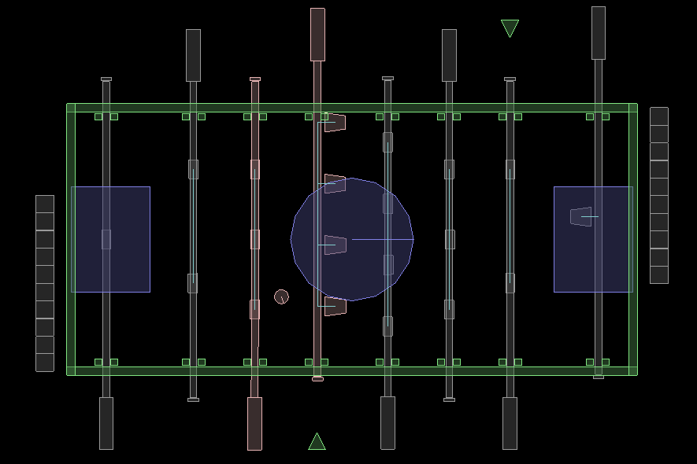
- We simulated the game of foosball using a bounding table, rods and rigid bodies representing players attached to each rod. Whenever the ball enters one of the goals situated at either end, a score variable is updated and this is shown by moving one of the relevant score blocks present on either side of the table. The first team to ten goals is the winner.
- The simulation consists of a ball which moves around on the frictionless table colliding with everything it comes in contact with.
- There are (transparent) rods at relevant locations on the table, constrained to move upto a certain limit in the upward or downward direction. The players attached to each rod can be moved towards either the left or right upto a certain limit. The user also has the option to turn the rod enough to lift all its players off the table.We used the b2PrismaticJoint to simulate motion of these players.
- The simulation is heavily dependent on user input. We implemented this overloading the keyboard() function of the base_sim_t class of Box2D.
Challenges and changes from original plan
- It was a challenge for us to implement the constraints required by the nature of the game, and we think that usage of prismatic joints and using the filter attributes of Box2D objects to cater to all aspects of motion of the players has made our design more efficient. We also feel that using static objects to constrain the motion of the rods (as explained later) was a simple yet effective feature.
- We tried to use prismatic joints to restrict the motion of the rods as well. However, this made the motion considerably inefficient and we finally decided to not do so.
- We changed players on the middle rod from five on the initial design to four. We also reduced the size of players. This was necessary to have enough space on the table for the ball to move around freely
- We also had to experiment with the density and restitution of the various bodies before deciding a final value to make the simulation seem as realistic as possible.
Parts of the simulation
Table
The entire game is played within the confines of the table, which serves to restrict the motion of the ball and rods. This was implemented using four box shapes.
Rods
Rod

- Rods are thin dynamic Box objects located at appropriate locations on the table. Two pairs of small static bodies named constr are located on either side of the rod at the point where it enters and leaves the table to constrain its motion in the y direction.
- These are non-transparent however, and have filter.maskBits set to collide only with the constr bodies.
- At any given point, only one rod per team is active. The user can change the active rod by giving a keyboard input.This is indicated by a pointer.
Pointer

- Each rod contains one anchor of a prismatic joint, the other end of which is connected to a Player body.
Player
Player
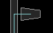
- A player is a small,rigid and dynamic body which is attached to a rod via a prismatic joint. All players on the current active rod can be move right or left(upto a certain limit) by a keyboard input.Such a rotation has greater impact if it happens from a start position far away from the final position of the player.
- The user can also lift the players of a rod off the table (meaning that the ball can pass underneath them) by pressing the right motion key while the players are at the maximum right position, and similarly for the left. This can be viewed as a change in the shape(fixture) of the players.
- These are implemented by setting appropriate attributes on the prismatic joint and by setting the fixtures and filter bits of the players accordingly.
Ball
Ball
The ball is a b2Circle shaped bullet object with relatively low density. Throughout the simulation, the ball is being struck by/bouncing off players/table walls. Scores are updated when the ball enters either of the goals.
Score boxes
Scores

- These are ten boxes located on either side of the table that represent the score.
- A dominos_t::check() function is continuously called by the base_sim_t::step() function that checks whether a goal has been scored. If so, the appropriate box is pushed towards the appropriate side.
- If the score of any team reaches ten or more, the game is restarted and the boxes are moved to their appropriate location.
Iteration number vs average steptime,loop time
Images of Debug mode and Release mode
g27_lab09_plot01_debug
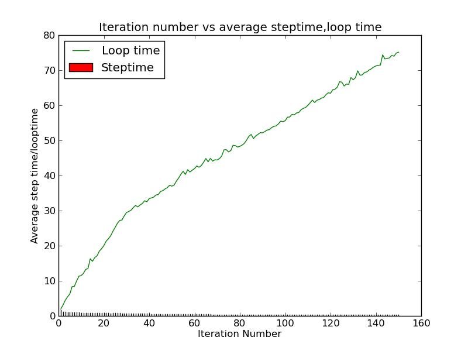
g27_lab09_plot01_release
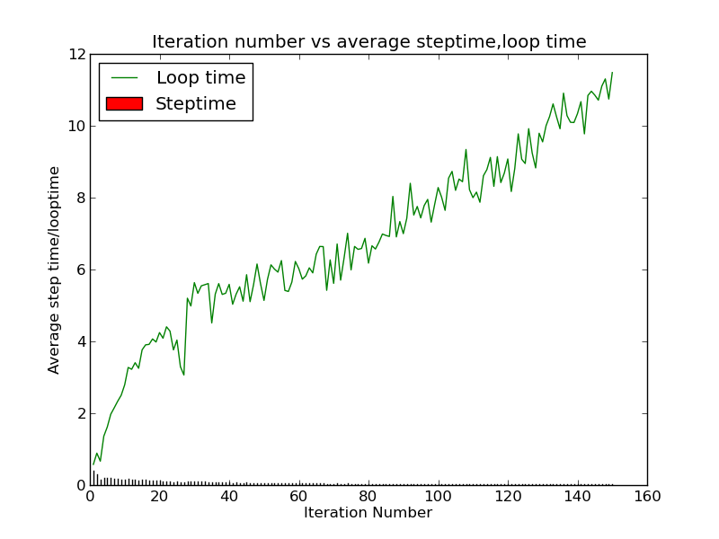
- In the above graphs we have average step time values and loop time values over
all reruns vs iteration number.
- Loop time increases with iteration number because as iteration number increases number of loops increases
,implies loop time increases.
- Average step time decreases with iteration number because simulation takes more time for every step at the
initial stage than for each step at later stages.Hence the average step time is high at initial stages and
and decreases as number of steps increases.
- In Debug mode step time is greater than the step time in Release mode.
- In Debug mode average time is greater than the average time in Release mode.
Iteration number vs All Average times
Images of Debug mode and Release mode
g27_lab09_plot02_debug
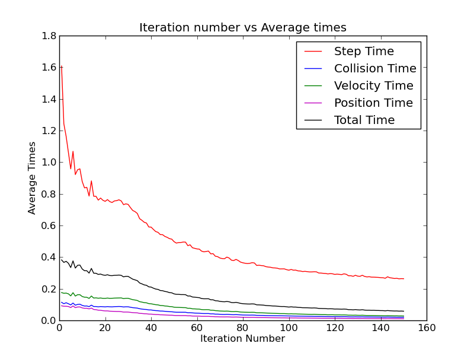
g27_lab09_plot02_release
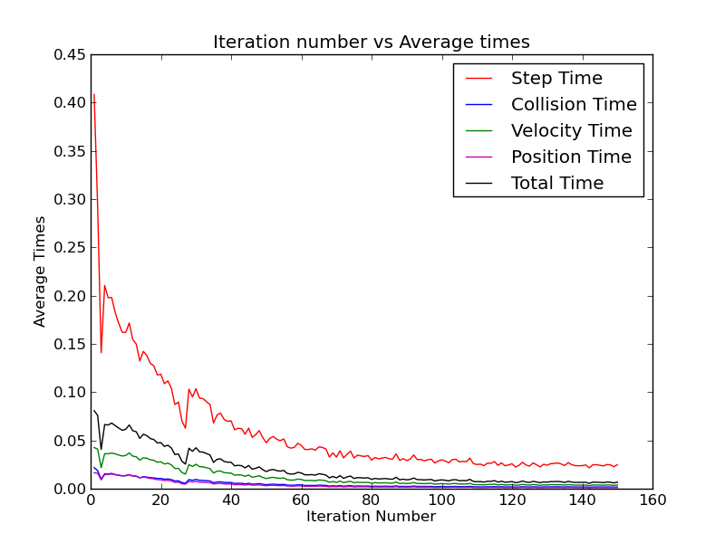
- In the above graph we have average step time, average collision time, average velocity time, average position time
, total time taken over all the reruns vs Iteration number.
- As discused above step time decreases with iteration number.
- Vecocity time, Collision time, Position time and total time also decrease with iteration number but the rate at which thy decrease is lower than
that of step time.
- All the times (velocity, collision, position, total) in Debug mode are greater than the times
in Release mode.
Iteration number vs Average Step Time with error bars
Images of Debug mode and Release mode
g27_lab09_plot03_debug
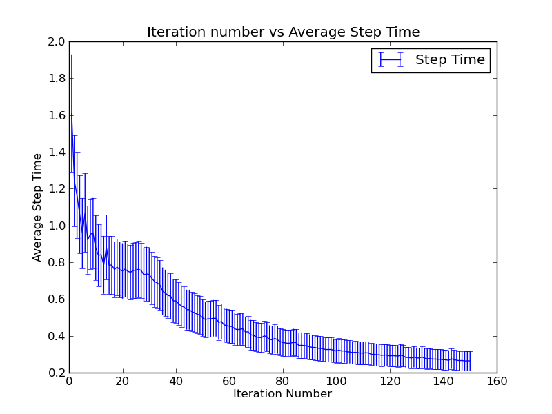
g27_lab09_plot03_release
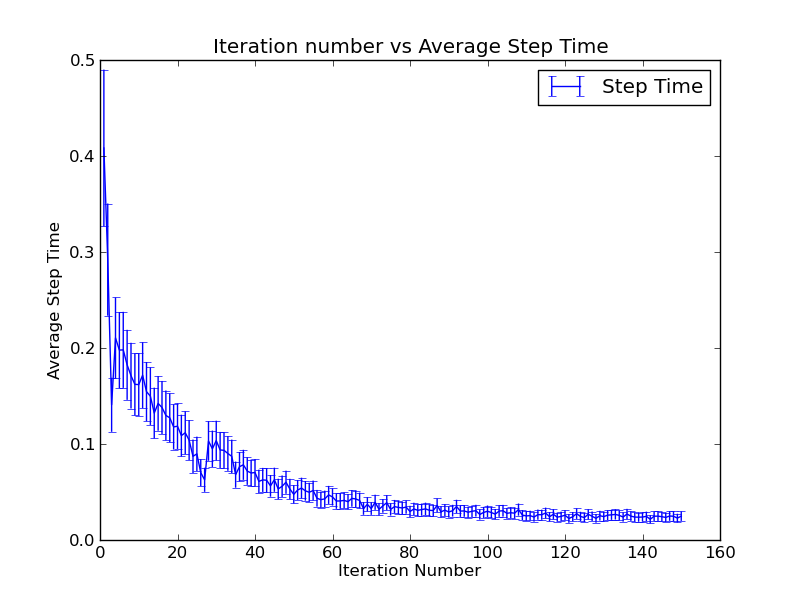
In the above graph we have average step times in Debug mode and Release mode over all reruns vs iteration number along with the error bars .
Iteration number vs average steptime
Images of Debug mode and Release mode
g27_lab09_plot04_debug
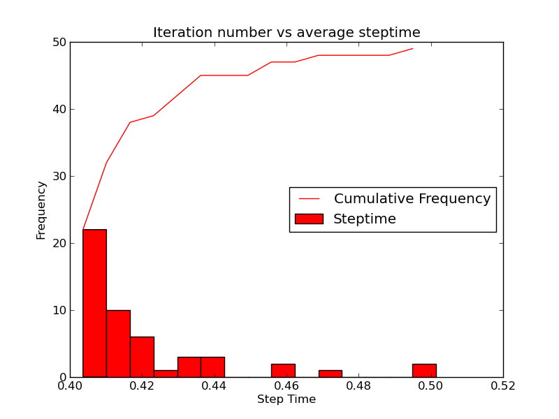
g27_lab09_plot04_release
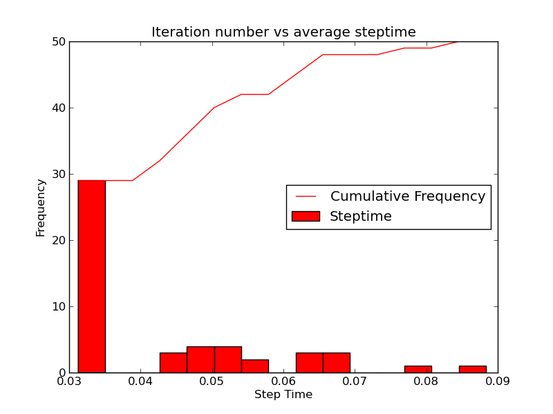
- The above graph is histogram for step time (both Debug mode and Release mode) for the iteration number 66 along with the cumulative frequency.
- We can see that the most of the step times in the Debug mode are in the range 0.40 - 0.42, where as in the Release mode most of the step times are in the range 0.03-0.06.Average step time (iteration number 66) for Debug mode lie in the range 0.40-0.42 and for Release in the range 0.03-0.06.
Iteration number vs Average times and best fit line
Images of Debug mode and Release mode
g27_lab09_plot05_debug
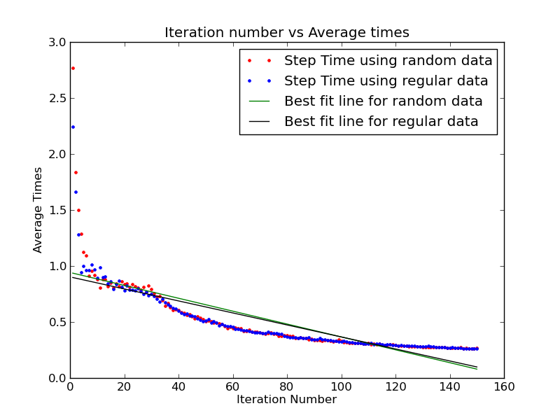
g27_lab09_plot05_release
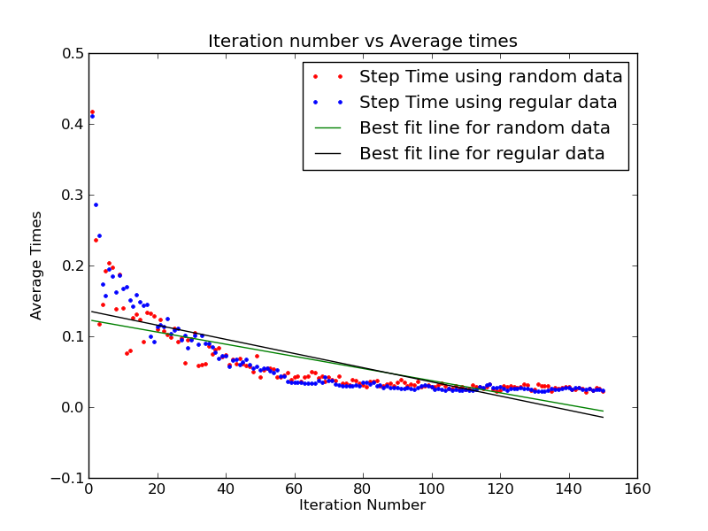
- In the above graph we have Average Step time in random data generated vs iteration number along with the Average step time in regular data vs iteration number.
- As discussed earlier step time decreases with iteration number for both Debug mode and Release mode.
- The average step times calculated using regular data are more accurate than the average step times generated using because in random data we take just 15 value for calculating average step time where as in regullar data we take 50 values for calculating average step time.
Profiling
Gprof
- In Gprof data about all the times taken by different classes, function calls etc. is stored while the .o (main.o callbacks.o,dominos.o
,cs296_base.0,render.o in this case) files are created and while these .o files are joined to form an executable (cs296_exe_27 in this case).
- Hence gprof stores all the information during the compilation of makefile itself.
- For using gprof we include -pg in all the commands that produce .o files and the commands that produce the
final executable file.
Perf
- In Perf data about all the times taken by diffenrent classes, function calls etc. is stored when the executable is executed (cs296_exe_27 in this case)
- Perf gives more accurate time taken by the function calls etc.
- For using perf we just need to run two commands
- perf record /path/to/the/exectuable -- stores the data
- perf report -- gives the entire data in the terminal
Profiling using perf
Release using PERF Debug using PERF
perf_release
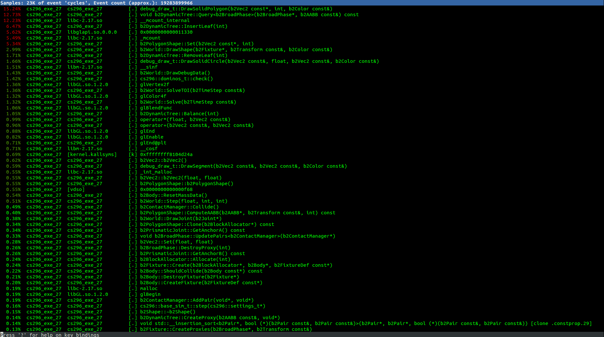
perf_debug
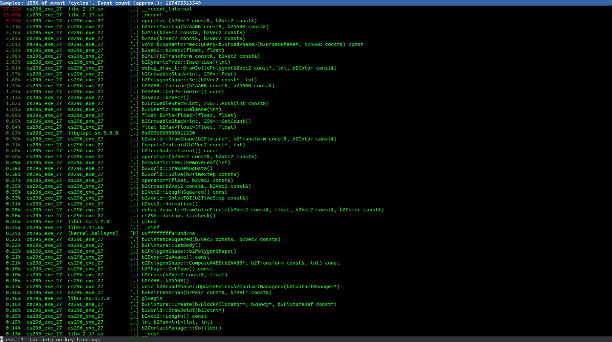
- For profiling we are running the code for 1000000 interations so that all those functions which are called very few times are also listed.
- Running the program for very few iterations may not give a clear stats of those functions that take long time or that are called for large
number of times during execution.
Optimized and Non-Optimized difference
- From the Release profile it is clear that the function call DrawSolidPolygon is the most expensive function.
- The Debug profile indicates that the operators -, operators +, b2Min, b2max etc are called for large number of times during the execution as they these functions are called in almost every function present in the code.
Where as in the Release profile i.e. in the optimised profile these function calls dont appear.
That implies in Release profile small function calls like +, -, max, min etc are minimised by using the flag
-O3 of the g++ compiler.
- Essentially, turning on optimization flags makes the compiler attempt to improve the performance and/or code size at the expense of compilation time and possibly the ability to debug the program.
- Different commands(-O, -O2, -O3, Ofast etc) turn on different optimization flags
- It is interesting to see that the number of function calls made by the function DrawSolidPolygon() in Debug mode and the Release mode are the same (order of 8)
Callgraph
- Here is the call graph of Debug mode using perf
debug
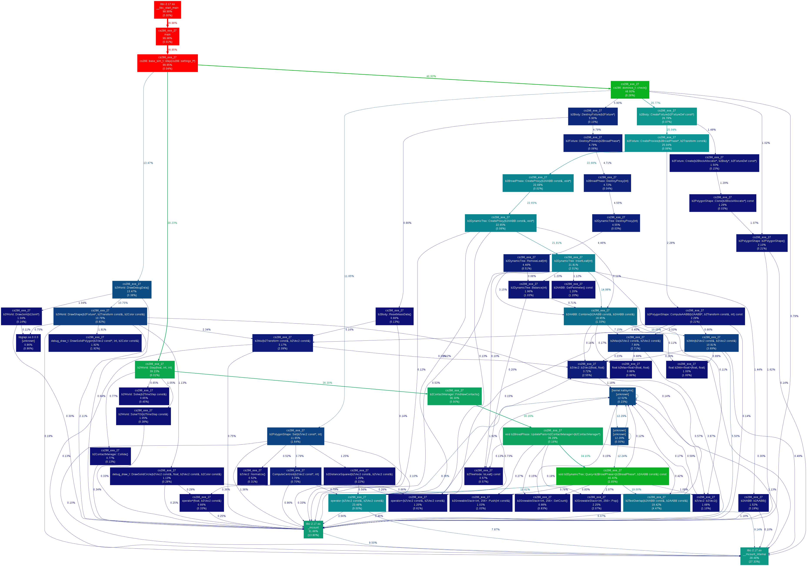
- Here is the call graph of Release mode using perf
release
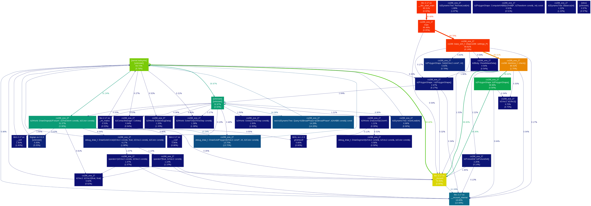
- From these we can clearly see the difference in number of function called in total which is very much high in
Debug mode than in Release mode.
- Callgraph gives information about the name of the function \% time it takes during the execution
- In the call graph for Debug mode functions like b2Min, b2Mul take 3.69, 2.09 \% of the total time where as in the callgraph for
Release mode they dont even appear
debug1
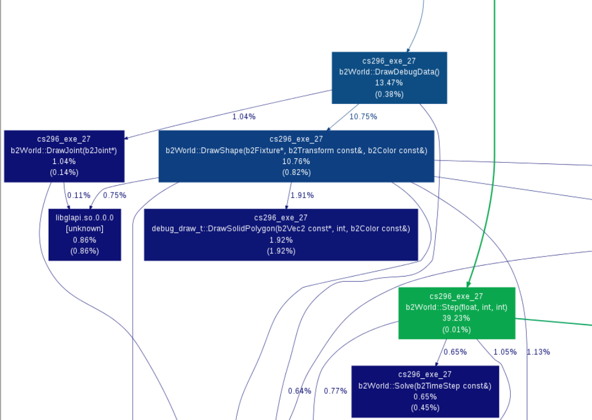
release1
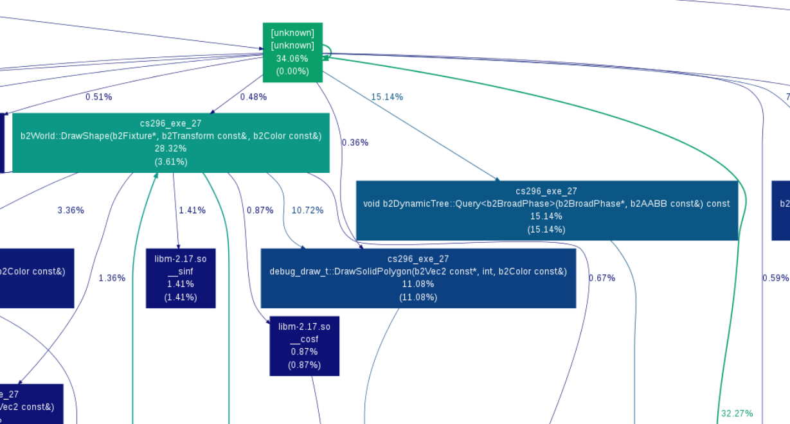
Conclusion
We have hence created a self contained two player foosball game using keyboard inputs and Box2D simulation
We have used the techniques learnt in earlier labs to make the code efficient and document it.
References
[1] Our batchmate Shivam Garg.
[2] https://www.google.com
[3] https://www.iforce2d.net/b2dtut/
[4] The Box 2D API. http://www.learn-cocos2d.com/api-ref/1.0/Box2D/html
[5] Jeff Atwood and Joel Spolsky. https://www.stackoverflow.com. 2009.
[6] Mayank Meghwanshi. http://www.cse.iitb.ac.in/~manku/files/g11_prof_report.pdf. 2013.
[7] Unknown. http://gcc.gnu.org/onlinedocs/gcc/Optimize-Options.html. 2013.